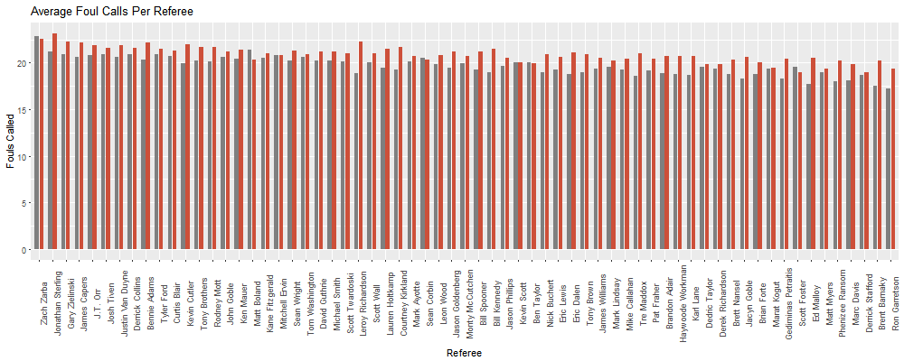
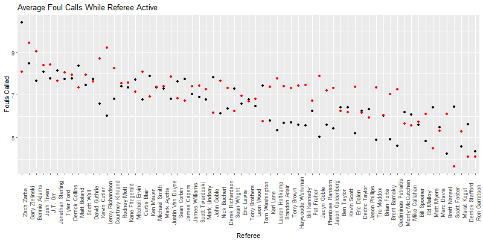
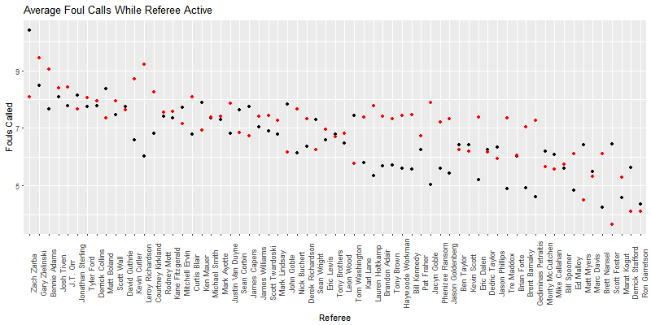

What we did:
Interested in home court advantage, we looked into foul calls made by each referee
in every game of the season. After scraping the data off stats.nba.com, we graphed
the number of calls made when the referee is on the court, as well as ...
For each NBA game, there are three referees on the court. Each one surveys only a specific part of the floor, but if one referee believes
an instance of contact warrants a foul, they will make their own individual decision to call it a foul.



Notable Trends/Observations:
- On average, home teams (listed in orange) get called for -temp- of fouls, while away teams (listed in gray) get called for more fouls, at -temp-.
- For a majority of the referees, home teams get an advantage because they are called for fewer fouls than the visiting team.
- However, this does not account for the fact that referees work in group of threes, so a referee working with another referee who makes many calls will also increase their foul calls in this chart.

Notable Trends/Observations:
- From the previous graph, we adjusted for the fact that other referees make their own calls, which can increase the number of foul calls for the other referees on the court. We adjusted this using least square approximation which led to an estimation of the number of foul calls an indiviual referee will make.
- For instance, for referees Monty McCutchen, Michael Smith, and Brian Forte, the total number of foul calls they called on the visiting team was 24. Let the number of calls that Monty McCutchen made be x1, the number of calls that Michael Smith made be x2, and the number of calls that Brian Forte made be x3. Then the number of calls can be represented by x1 + x2 + x3 = 24. Taking this equation from every game in the season, we minimized the square error for each referee to get the number of calls that each referee makes.
- As you can see from the results of this graph and the previous one, referees Kevin Cutler and Leroy Richardson have wide discrepancies between the number of calls they give for the home team and the number of calls they give the visiting team.
Notable Trends/Observations:
- The graph shows five different situations. The first set of all the board colors represent the number of rolls it takes to pay back all costs of the property with one house on it. The second set displays the number of rolls assuming there are two houses, etc.
- The addition of the third house is more efficient as opposed to building one house or two houses on all the properties.
- The addition of the fourth house and the eventual building of the hotel don't actually decrease the number of rolls it takes to break even. What it does change is the player's ability to bankrupt others. However, it is also risky because you will most likely be digging yourself out of the financial costs that the building costs.